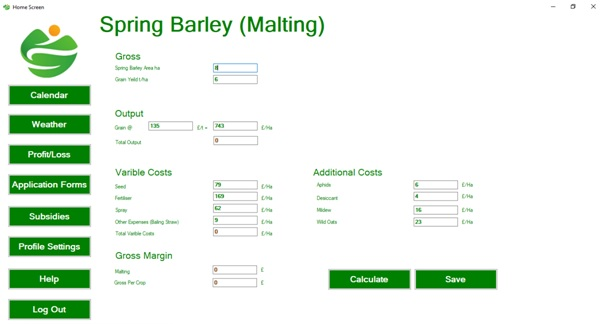

I'm John.
A junior software developer.
As part of my MSc I was required to develop a project this is the main project that i have been involved with to date. I am currently working on several projects using Xamarin, Blazor and in early 2022 I will be working with .net MAUI.
This project aimed to develop a desktop application to support users to manage their farming/agricultural business budget and, therefore, assist them to make informed management decisions. This is an area which have proven to be problematic at times due to poor organisational and time management skills, lack of understanding of the current market environment, poor record keeping and literacy issues which can impact on the understanding of info, market changes, usage of technology, difficulties in meeting deadlines for agricultural schemes and therefore, financial issues. Thus, this project intends to assist users with their budgeting and access to applications for governmental support schemes which are an important source of income within this industry. Finally, the program anticipated to be user friendly with people with literacy difficulties which is a wide problem identified in the farming/agriculture community. The project report can be downloaded here and the App files from here.
